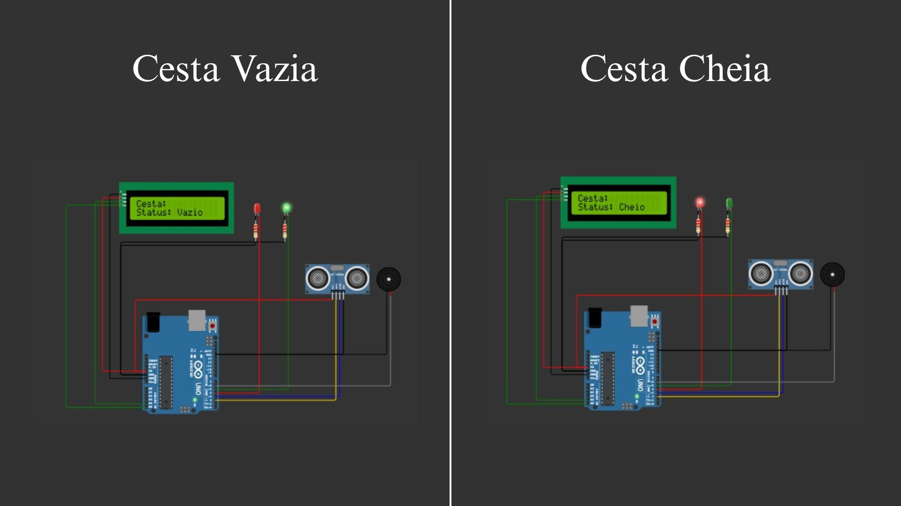
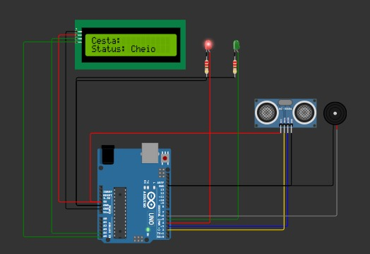

Diante dos recorrentes problemas causados por bueiros entupidos, como alagamentos, prejuízos materiais e riscos à saúde pública, torna-se urgente buscar soluções tecnológicas eficientes para mitigar esses danos e modernizar a gestão urbana. Pensando nisso, propomos o uso de uma tecnologia simples, acessível e inteligente: a instalação de cestas coletoras com sensores de monitoramento dentro dos bueiros. A ideia central é equipar os bueiros com estruturas metálicas ou plásticas em formato de cesto, que funcionem como um filtro, retendo o lixo descartado irregularmente nas ruas — como sacolas, garrafas, folhas, plásticos e outros dejetos — antes que esse material desça pelas galerias pluviais e cause obstruções. Essas cestas são removíveis, facilitando a limpeza e a manutenção por parte das equipes de coleta urbana. O diferencial da proposta está na integração de sensores de nível nessas cestas. Os sensores serão responsáveis por detectar o acúmulo de resíduos no interior do cesto e identificar quando ele estiver próximo da capacidade máxima. Quando isso ocorrer, o sistema envia automaticamente alertas em tempo real para uma central de monitoramento, que pode estar vinculada à prefeitura ou à Secretaria de Obras e Serviços Públicos. Esse sistema permitirá uma resposta rápida e precisa, otimizando o trabalho das equipes de limpeza e evitando entupimentos antes que eles causem enchentes. As informações captadas pelos sensores poderão ser armazenadas e analisadas, criando um banco de dados inteligente sobre os pontos mais críticos da cidade, o comportamento das chuvas, a frequência de enchentes e a distribuição de resíduos nas ruas. Isso possibilita ao poder público um planejamento urbano mais eficiente, baseado em dados concretos e atualizados, com foco na prevenção em vez da reação emergencial.
Além disso, a tecnologia pode ser integrada com outras soluções de Edge Computing, permitindo que o processamento inicial dos dados seja feito localmente (no próprio dispositivo), diminuindo o uso de rede e otimizando os alertas. Esse modelo também reduz custos operacionais a longo prazo e contribui para a construção de cidades inteligentes (smart cities), que usam a tecnologia para melhorar a qualidade de vida da população. Outro benefício importante está na educação ambiental indireta: com o aumento da eficiência na coleta de resíduos visíveis nos bueiros, e com a divulgação desse tipo de iniciativa, a população tende a perceber com mais clareza os impactos do descarte incorreto do lixo. Esse efeito educativo pode reforçar campanhas de conscientização e estimular o comportamento responsável da sociedade. Portanto, a proposta de instalação de cestas coletoras com sensores inteligentes representa uma solução prática, de baixo custo e altamente eficiente para combater os efeitos dos bueiros entupidos. Ao combinar tecnologia, sustentabilidade e planejamento urbano, ela oferece uma resposta concreta e inovadora aos desafios enfrentados pelas cidades brasileiras diante das chuvas e enchentes cada vez mais frequentes.
